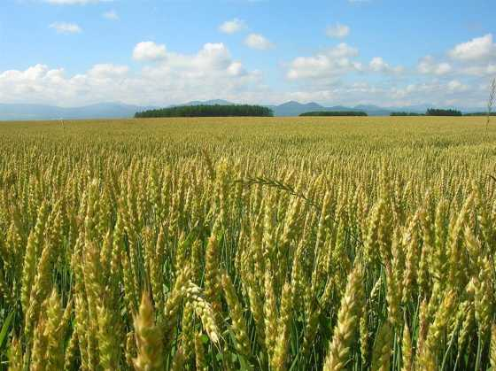
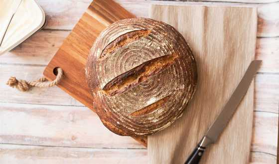
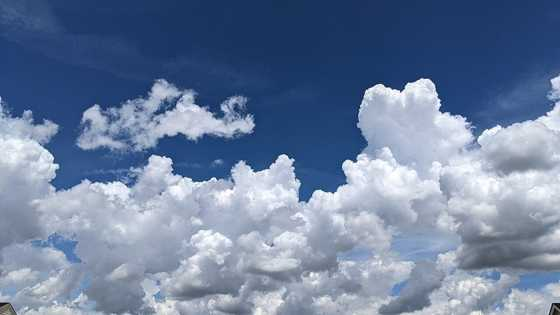
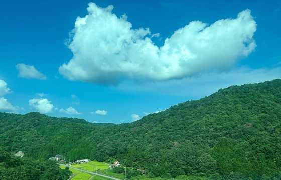
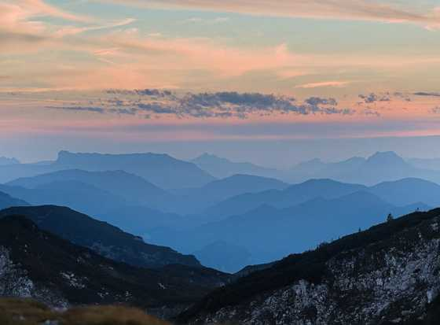
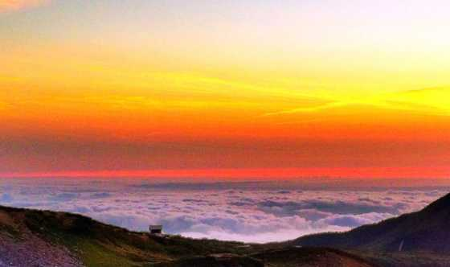
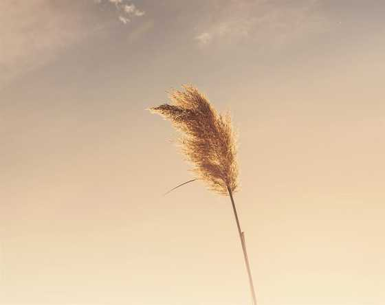
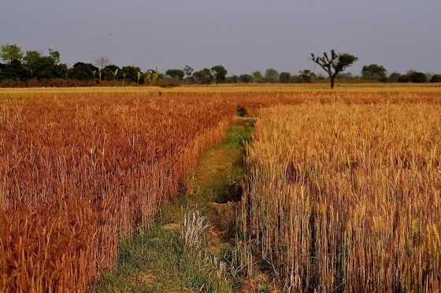
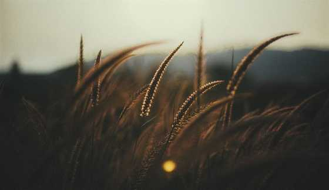

SORA TO MUGI TO YATSUGATAKE
空と麦と八ヶ岳
空の下で、麦を焼く。八ヶ岳のふもとの、パンの時間。
空ひらけた空
麦パンのもと
八ヶ岳長坂の山なみ
Bread
棚に並ぶもの
Instagram(@soratomugito)では、パンや焼き菓子の写真が投稿されています。具体的な商品名・価格・営業時間・定休日は確認できていないため、下記は「準備中」としています。

パン
準備中
焼き菓子・ペストリー
準備中
商品名・価格
準備中| 営業時間 | 準備中 |
|---|---|
| 定休日 | 準備中 |
| 電話 | 準備中 |
Image
空と麦と山のイメージ






山や空の写真は八ヶ岳・北杜市のものではなく、雰囲気を伝えるフリー素材です。
Voice
口コミ
イメージ例
朝の空気のなかで、焼き上がりのパンを選ぶ時間が好きになりそうです。
イメージ例
店名のとおり、空の広さと麦の香りを思い出す一個に出会えそう。
イメージ例
八ヶ岳へ出かけた帰りに、少し寄って帰りたいベーカリーです。
上記は制作側が作成したイメージ例で、実在のお客様の声ではありません。
About
店名と、お店のこと
確認できた事実は、山梨県北杜市長坂町大八田にあるベーカリーで、Instagram(@soratomugito)でパンや焼き菓子の写真が発信されていることです。店名の由来やオーナーの想いを語った公開情報は、見つかりませんでした。
以下は制作側のイメージです。「空」「麦」「八ヶ岳」という三つの言葉から、ひらけた空、パンのもとになる麦、そして長坂から望む山なみを思い描き、このページの配色(空の青・麦の金・山の緑)を決めました。お店の公式な説明ではありません。



Access
アクセス
| 住所 | 〒408-0034 山梨県北杜市長坂町大八田6337-1 |
|---|---|
| 電話 | 準備中 |
| @soratomugito |

掲載の写真はフリー素材のイメージで、店舗の実際の様子・商品ではありません。実際の写真はご提供いただいたものに差し替えます。
写真クレジット
- cloud-bank.jpg「White Cumulus Clouds against Blue Sky (2)」Lance Vanlewen / CC BY-SA 4.0 (ライセンス)
- wheat-sea.jpg「十勝・むぎ」pakku / CC BY 3.0 (ライセンス)
- green-hills.jpg「Shobara Hiroshima 2023 Aug 20 various」Nesnad / CC BY 4.0 (ライセンス)
- gold-ears.jpg「Ripe wheat ears」Jazzmaster1997 / CC BY 4.0 (ライセンス)
- blue-ridge.jpg「Rocky ride. - Flickr - simon berger」simon from Austria / CC0 1.0 (ライセンス)
- dusk-sea.jpg「Sea of clouds-sunset-murodo-japan201608」melvil / CC BY-SA 4.0 (ライセンス)
- loaf-board.jpg「Ben Garratt 2016 (Unsplash)」Ben Garratt / CC0 1.0 (ライセンス)
- pastry-pile.jpg「Croissants au beurre (18953292873)」Herry Wibisono (herryway) / CC0 1.0 (ライセンス)
- wood-shelf.jpg「Loaves of Bread (Unsplash)」Clark Young / CC0 1.0 (ライセンス)
- lone-ear.jpg「Lone ear of wheat (Unsplash)」Jez Timms / CC0 1.0 (ライセンス)
- ear-sky.jpg「Ears of wheat」Daniela M. / CC BY-SA 4.0 (ライセンス)
- cloud-peak.jpg「Rolling mountains topped by white clouds in a blue sky in Yakushima, Japan 2015」jillllybean / CC BY-SA 2.0 (ライセンス)
- amber-field.jpg「Golden wheat field 2」Nupur Dasgupta / CC BY 2.0 (ライセンス)
- dusk-ears.jpg「Ears of wheat at dusk (Unsplash)」Cezanne Ali / CC0 1.0 (ライセンス)